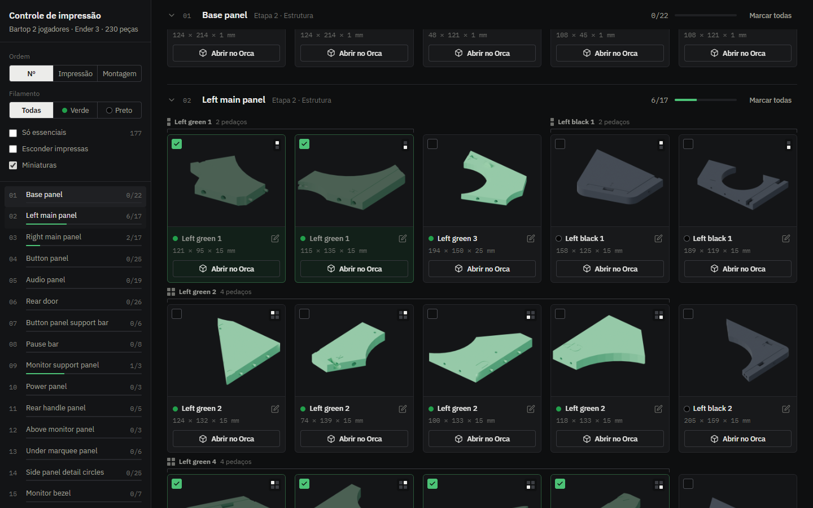
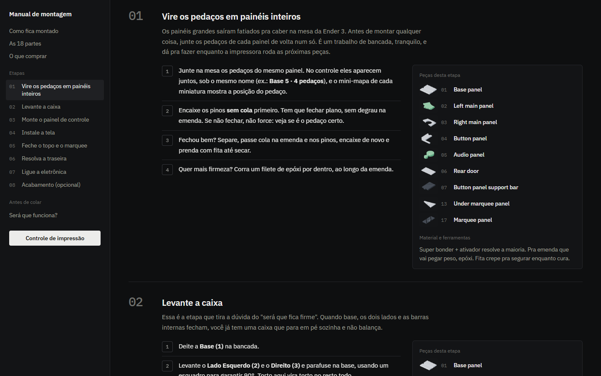

O QUE VOCÊ RECEBE
Três ferramentas, da impressora ao jogo rodando
Cada uma resolve uma parte do caminho: imprimir sem se perder, montar na ordem certa e colocar os jogos no fliperama.

Controle de impressão
Todas as peças com miniatura 3D, separadas por parte. Marque o que já saiu da impressora, anote falhas e horas, filtre por cor do filamento e abra cada STL direto no OrcaSlicer.
Abrir o controle
Guia de montagem
As 8 etapas, das peças cortadas à caixa fechada: o que fazer em cada uma, quais partes entram e o material necessário. Inclui a lista de compras e a configuração do fatiador.
Abrir o guiaApp RetroPie ROM Sender
Programa para Windows que pega o jogo que você baixou e envia pela rede para a Raspberry Pi, já na pasta certa do emulador, com capa. Sem terminal, sem FileZilla.
Ver como funcionaDOWNLOAD · PEÇAS 3D
Peças prontas para imprimir
Um ZIP com tudo para a Ender 3: 231 peças em STL separadas pelas 18 partes do gabinete e 106 mesas prontas por cor de filamento (verde, preto e branco), em que cada arquivo é uma impressão. Inclui o LEIA-ME com a configuração do fatiador e o instalador do botão "Abrir no Orca".
Remix do modelo "2 Player Bartop Arcade - Machine - Cabinet", do autor original no MakerWorld (ver o original): peças cortadas para a mesa de 220 mm, com pinos de encaixe. Mesma licença Creative Commons do original, uso não comercial; ao compartilhar, mantenha o crédito ao autor.ATUALIZAR JOGOS PELO WIFI
Jogos novos no fliperama sem tirar o cartão
Com o fliperama na estante e a Raspberry Pi ligada, você adiciona jogos do seu PC pela mesma rede WiFi — nada de desmontar nada ou mexer no terminal da Pi.
- Você navega e baixa o jogo no site de ROM, dentro do navegador do app.
- O app intercepta o arquivo e detecta o emulador certo pela URL.
- Envia pela rede por SFTP direto para ~/RetroPie/roms na Pi.
- Reinicia o EmulationStation e o jogo aparece na hora — já com a capa.
COMO FUNCIONA
Quatro passos até jogar
O caminho completo, do primeiro STL ao primeiro "insert coin".
- 01
Imprima
Os STL já estão cortados para a Ender 3. Siga a ordem sugerida no controle de impressão e marque cada peça.
- 02
Monte
Cole os pedaços de cada painel pelos pinos de encaixe e parafuse a caixa seguindo as 8 etapas do guia.
- 03
Instale o Pi
Coloque a Raspberry Pi com RetroPie e use o app para mandar jogos e capas pela rede.
- 04
Jogue
Ligue, chame alguém para o segundo controle e jogue no fliperama que você mesmo fez.


DOWNLOAD · GRÁTIS
RetroPie ROM Sender
Envia ROMs para a sua RetroPie pela rede (SFTP), direto na pasta certa do emulador. Baixe a versão portátil, que roda sem instalar, ou o instalador.
Windows 64-bit · sempre a versão mais recente · ver versões · código aberto, sem conta e sem rastreio: ver o códigoDÚVIDAS
Perguntas frequentes
O que costuma aparecer antes de começar.
Preciso de impressora grande?
Não. Todas as peças foram cortadas para caber numa Ender 3 (mesa de 220 × 220 mm). Elas se encaixam por pinos e se colam depois.
Quanto tempo leva para imprimir?
São mais de 300 h de impressão no total. É para isso que existe o controle: você marca o progresso, as falhas e as horas de cada peça.
Preciso imprimir colorido?
Não é obrigatório, mas o modelo é bicolor (verde + preto) e fica bem melhor em duas cores. O controle mostra a cor de cada peça e filtra por cor, para você imprimir uma cor de cada vez.
É realmente grátis?
Sim. O guia, o controle e o app são gratuitos. O gasto é o filamento e o hardware: tela, botões e Raspberry Pi.
Como coloco jogos no fliperama?
Pelo app, na mesma rede WiFi: ele manda o jogo do seu PC direto para a Raspberry Pi e o jogo aparece na hora. Veja a página do app.
Posso abrir as peças direto no fatiador?
Sim. No controle, cada peça tem o botão "Abrir no Orca". Baixe o ZIP das peças, extraia numa pasta fixa e rode uma vez o INSTALAR_abrir_no_orca.bat que vem dentro de pecas/.
Posso compartilhar as peças?
Sim, sem fins comerciais e mantendo o crédito ao autor original do modelo no MakerWorld, sob a mesma licença Creative Commons do original.